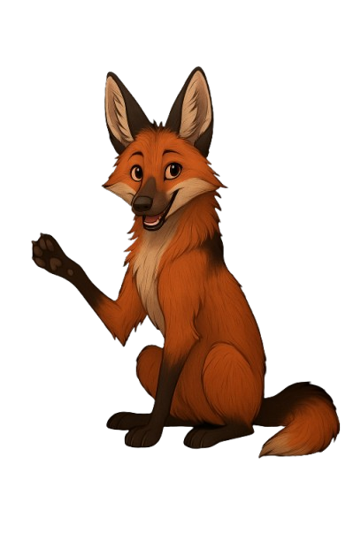

Bem-vindo(a)! Gramática online
O Gramática online é uma continuação do projeto O Portal de 2018, que era um aplicativo de estudos, e agora se expande para alcançar mais estudantes de forma simples e gratuita! Aproveite tudo o que O Portal pode oferecer e aprenda de forma leve e divertida. Esperamos que lhe ajude a estudar.
INICIE AGORA

Olá, me chamo Kael! Sou o mascote do Gramatica Online, e vou acompanhar você nessa jornada de aprendizado. É muito bom ter você aqui! Clique no botão para começar sua jornada!